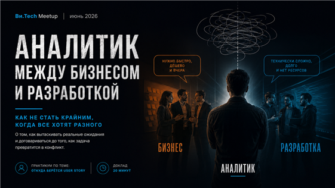
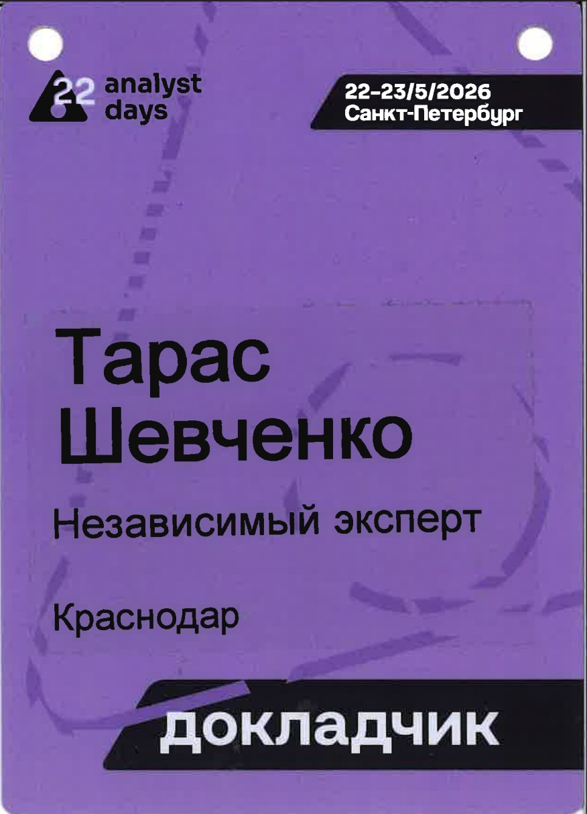

Убедительная коммуникация
Мастерство внутрикорпоративных переговоров для технических руководителей. Инструменты переговорщика из разработки и больше половины времени — практика в мини-группах.
Подробные тезисыГлавный системный аналитик AI-платформы AlfaGen в Альфа-Банке. Докладчик Analyst Days, DevOpsConf и TeamLead Conf. Доклады и мастер-классы о внутрикорпоративных переговорах, происхождении требований и о том, что происходит с командами, когда в них появляется AI.
Мастерство внутрикорпоративных переговоров для технических руководителей. Инструменты переговорщика из разработки и больше половины времени — практика в мини-группах.
Подробные тезисы
Системный анализ между соблазнением, манипуляцией и властью. Открытый спор двух аналитиков о границе между влиянием и манипуляцией.
Расшифровка и видеозапись
Как меняется команда, когда AI становится участником delivery: контекст, ревью, ответственность за код и новые зоны ответственности. Опыт корпоративной AI-платформы.
Страница доклада на конференции
Практикум о происхождении требований: как отличить настоящую потребность от озвученного запроса и превратить сырую идею в рабочую историю.
▶ Смотреть запись
Как не стать крайним, когда все хотят разного. О том, как вытаскивать реальные ожидания и договариваться до того, как задача превратится в конфликт.
Анонс митапаТехлиды, разработчики и тимлиды проваливают переговоры внутри компании не из-за техники, а из-за коммуникации: соглашаются на нереальные сроки, берут лишний scope, говорят на «техническом», не фиксируют договорённости — и в итоге выгорают сами и сжигают команду.
Разбираем рабочий набор инструментов переговорщика из разработки: приоритизацию по ценности и рискам, формулировку MVP и MVP+, технику «если — то», магию «и» вместо яда «нет», фиксацию договорённостей как броню команды. BATNA и ZOPA на понятных кейсах: срез бюджетов, перенос дедлайнов, рефакторинг, Black Friday, прод-инциденты, срочная хотелка ключевого клиента.
Больше половины времени занимает практика в мини-группах по реальным сценариям: жёсткие сроки, урезание ресурсов, переключение людей на «стратегический» проект, смена приоритетов посреди спринта. Участники отыгрывают роли стейкхолдера, техлида и наблюдателя, получают структурный фидбэк и уносят шпаргалку фраз для сложных разговоров с бизнесом, менеджментом и заказчиками.
Люди — такие же сложные системы, как софт, и у каждой роли есть свой интерфейс с набором ручек, за которые можно дёргать. Вопрос в том, где заканчивается поиск точек приложения усилий и начинается то, за что потом стыдно.
Доклад построен как открытый спор двух аналитиков, которые смотрят на влияние по-разному: один — из условий, где сроки и премии важнее рассуждений, другая — из позиции, где цена манипуляции всегда возвращается. Конфликт вынесен в центр выступления намеренно: без него разговор о влиянии превращается в набор приёмов без этики.
Практикум о происхождении требований: откуда на самом деле берутся пользовательские истории, как отличить настоящую потребность от озвученного запроса и как превратить сырую идею заказчика в историю, по которой команда действительно может работать.
Конфликты между бизнесом, продуктом, аналитикой и разработкой почти всегда начинаются с разного понимания задачи. Для бизнеса это «простая фича», для разработки — требования, ограничения и риски, а аналитик оказывается ровно посередине.
О том, как вытаскивать реальные ожидания, формулировать требования, работать с user story и помогать командам договариваться до того, как задача превратится в конфликт.
Провожу переговорные практикумы внутри компаний — для тимлидов, техлидов и руководителей групп. Формат адаптируется под кейсы заказчика: разбираем не абстрактные сценарии, а те разговоры, которые в этой компании действительно идут тяжело.
Проектный офис по развитию ИТ-сообщества отметил профессионализм, глубину экспертизы, умение адаптировать управленческие практики под реальные задачи бизнеса и атмосферу открытости и доверия, созданную на занятии. — из благодарственного письма АО «Гринатом», 8 июня 2026
Темы, которые готов прочитать на вашей конференции или внутри компании. К каждому докладу есть парный практикум — можно взять по отдельности или связкой «теория плюс отработка».

Политика выживания системного аналитика в эпоху AI: что остаётся человеку, когда модель пишет требования быстрее, и почему ценность смещается от текста к решениям.
Обсудить проведение
Как устроена ваша команда на самом деле: реальные роли, влияние и негласные правила, которые не совпадают с оргструктурой на схеме. Ролевая игра с разбором и рабочим инструментом на выходе.
Обсудить проведениеТарас Шевченко (MorliDots), главный системный аналитик AI-платформы AlfaGen в Альфа-Банке. Более 10 лет на стыке системного анализа, управления продуктами и организационных изменений: прошёл путь от аналитика и руководителя проектов в Т1-Консалтинге до эксперта по развитию процессов и практик в крупных организациях.
Сейчас занимаюсь платформой генеративного AI внутри банка — тем самым стыком, о котором рассказываю со сцены: как встроить AI в реальные процессы, а не в презентацию, и что при этом происходит с людьми и договорённостями внутри команд.
Проектирую API и интеграции, привожу в порядок требования и документацию, помогаю командам договариваться между собой и со стейкхолдерами. Считаю, что люди — такие же сложные системы, как софт, и у каждой роли есть свой интерфейс. Отсюда и темы докладов: не про инструменты, а про то, как через эти интерфейсы проходит работа.
Веду Telegram-канал «Разум аналитика», менторю аналитиков и разработчиков на GetMentor, автор образовательных программ.
